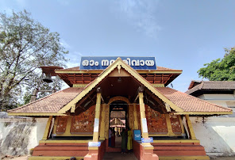
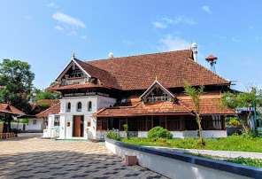

Kottayam

Kottayam is a city in the Indian state of Kerala. It is the district headquarters of Kottayam district, located in south-west Kerala. Kottayam is located in the basin of the Meenachil River at an average elevation of 3 metres above sea level, and has a moderate climate.
Places to visit
1.Thirunakkara Mahadeva Temple
Hindu temple with performances & murals
2.Thazhathangady Juma Masjid
Thazhathangady Juma Masjid is a mosque situated in Thazhathangady, one of the Heritage Zones of Kerala, India, near the town of Kottayam. It is one of the oldest mosques in India and is more than 1000 years old. It is famous for its richness of architecture, wood carvings and the beauty. Southern half of it is demolished and extended with iron pillars, aluminium sheets and minars in 2012. This mosque is situated on the banks of the Meenachil river.